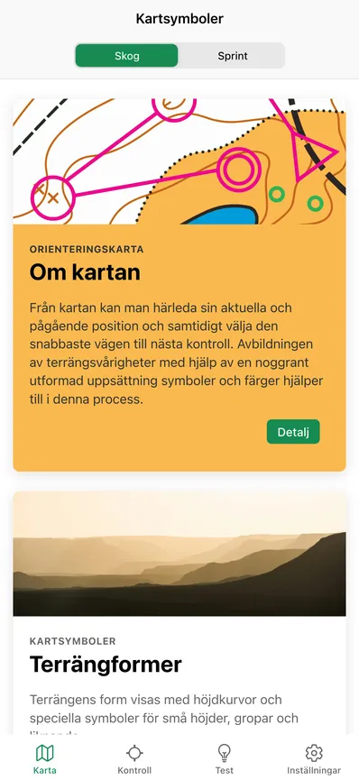
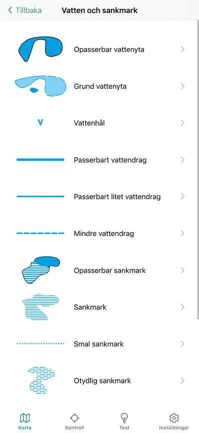
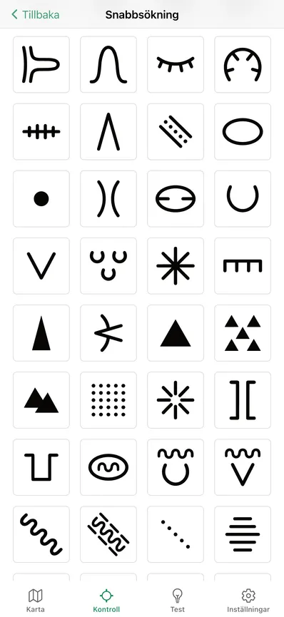
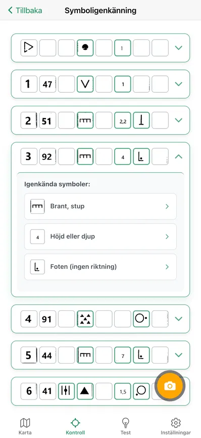
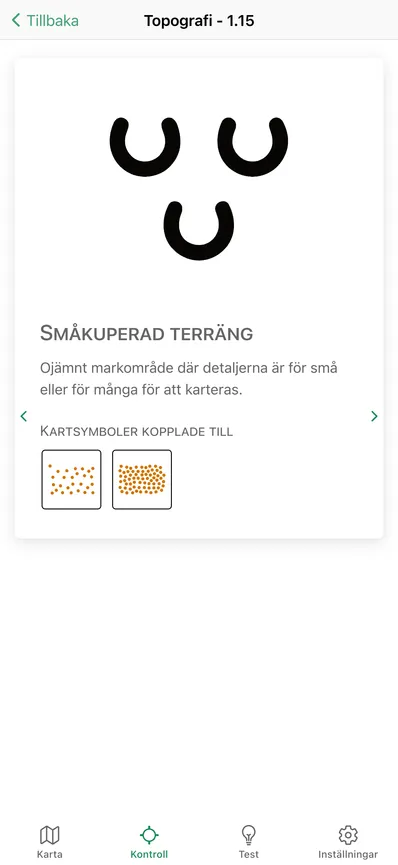
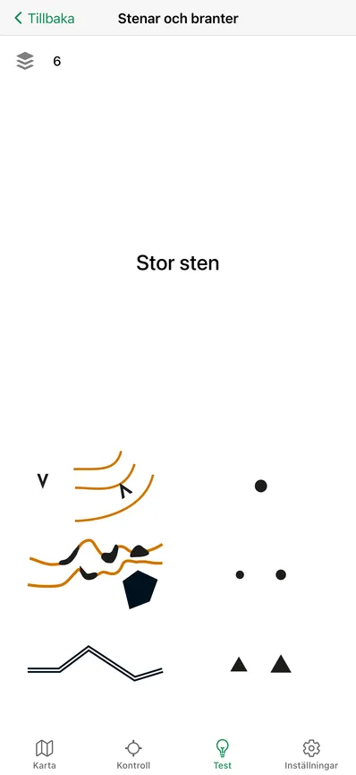
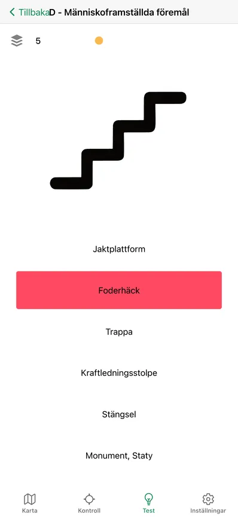
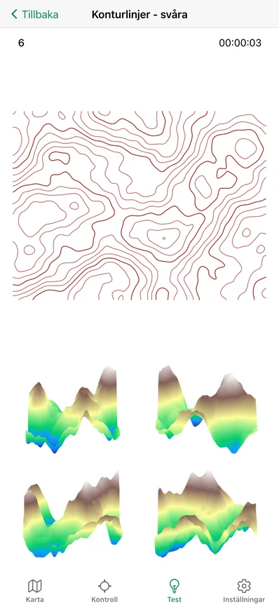

Orisym
Orientera med översikt
Utbildning, testning och katalog av symboler för orientering










Varför Orisym?
- Du kommer att lära dig innebörden av varje symbol för orientering i detalj
- Testa dina kunskaper för att se var du står och förbättra dem
- I katalogen över kartsymboler och kontrollplatssymboler hittar du detaljerade beskrivningar av deras betydelser
- Du kommer att upptäcka sambandet mellan de två typerna av symboler och deras relationer
- Du kommer att förbättra din rumsliga orientering genom att känna igen terrängen med hjälp av konturer
- Det krävs ingen internetuppkoppling för att köra programmet, det fungerar offline